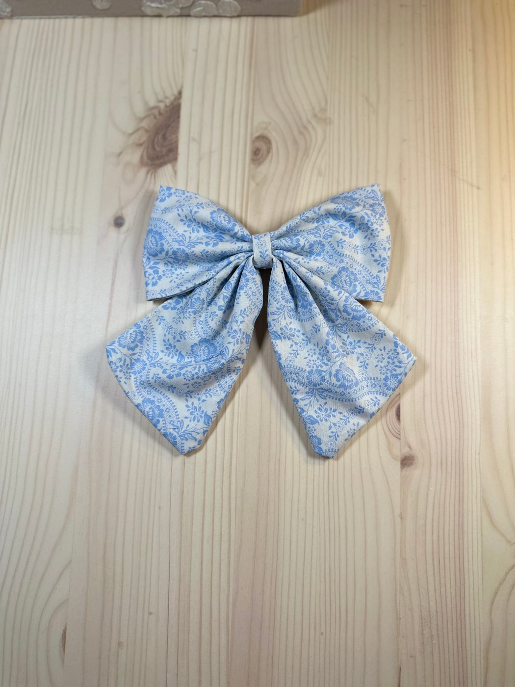

⤢ ZoomSomething Blue Bow
$12.00
The palest of the five — soft powder blue under a fine lace-like tracery of flowers, so light it reads almost silver from across a room. The one to reach for when you want the bow noticed but not announced.
6″ long × 6″ wide · on a slide-in clip · spot clean only · store away from direct sun to keep color true.
Ships from San Antonio, Texas · shipping & returns · San Antonio local? Choose Local pickup at checkout.
Pairs well with
One shipping fee per order, however much you add — and orders over $50 ship free.